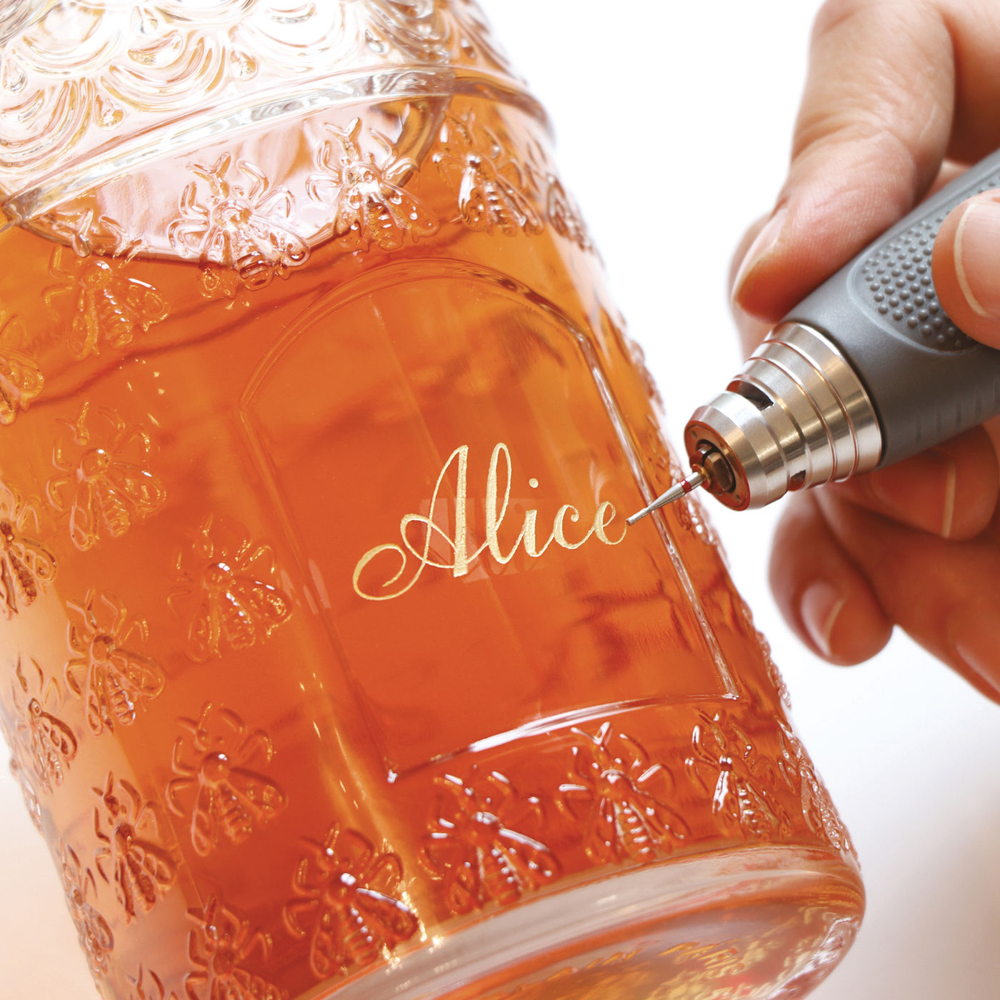
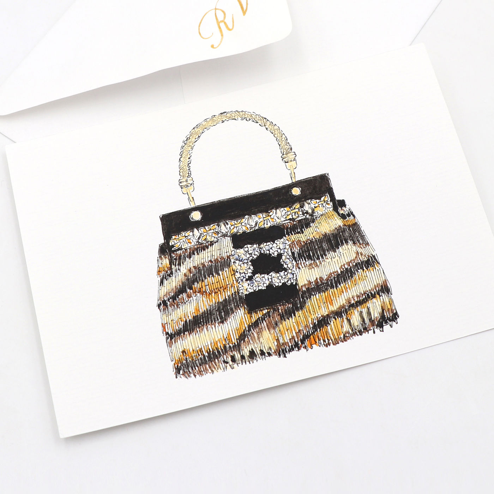
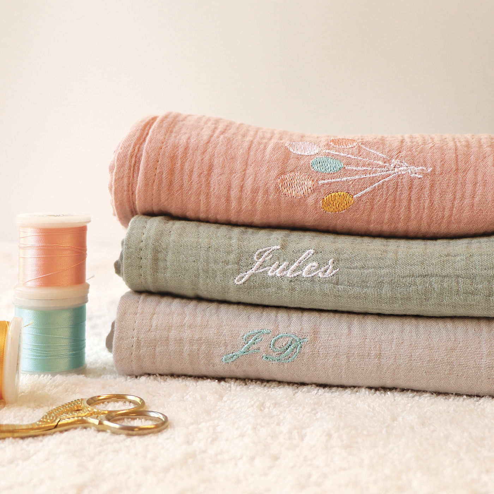
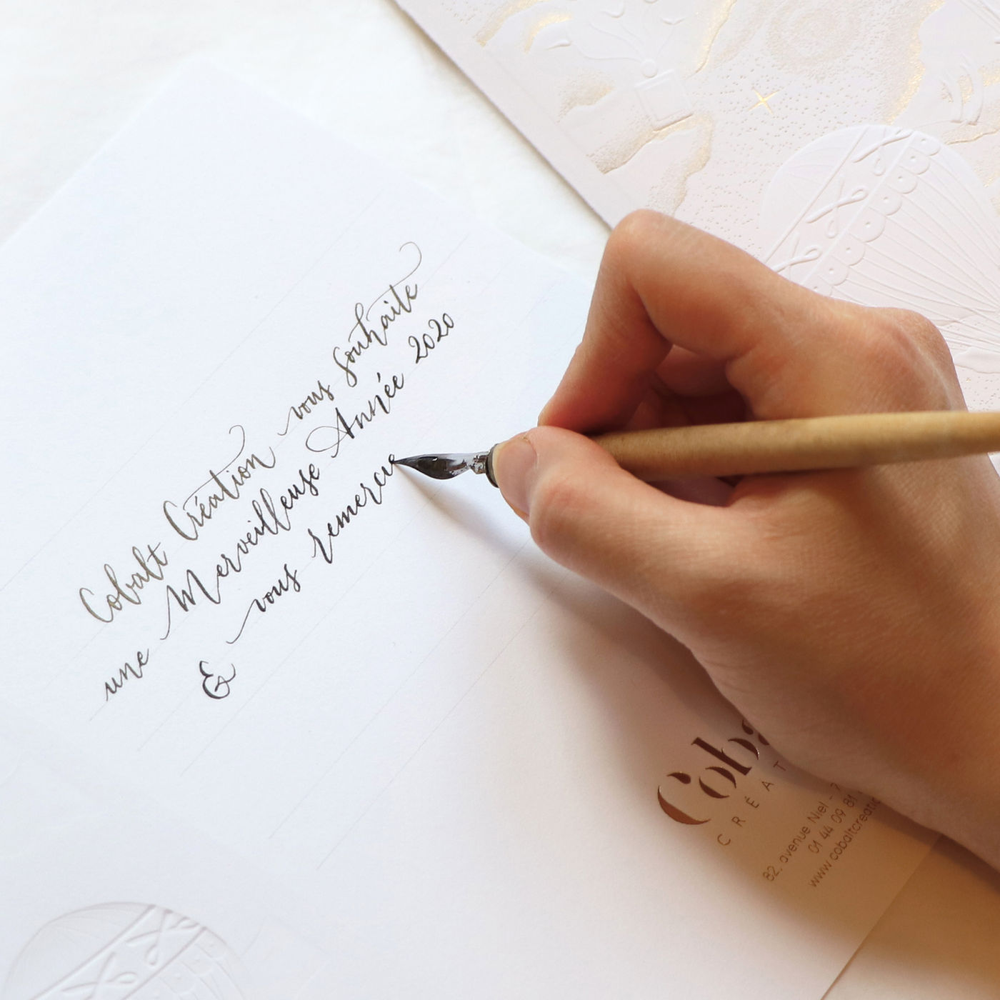
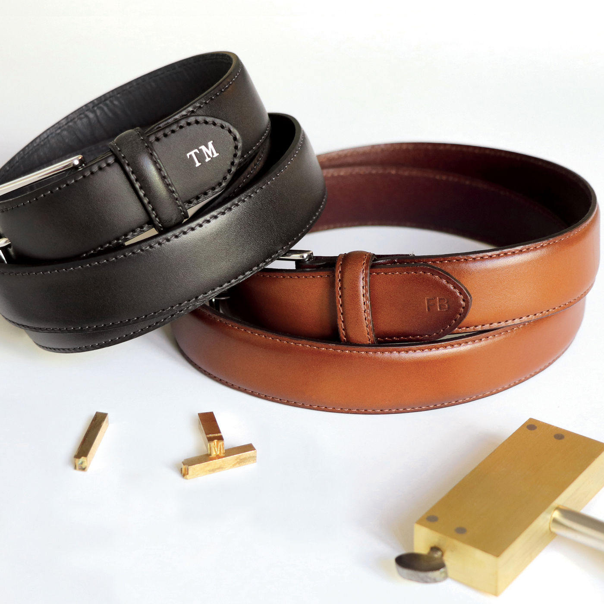
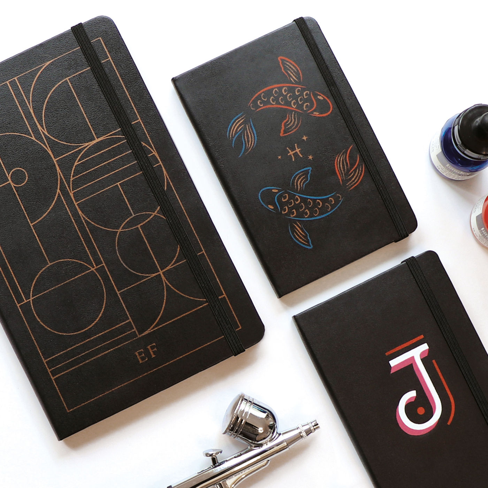
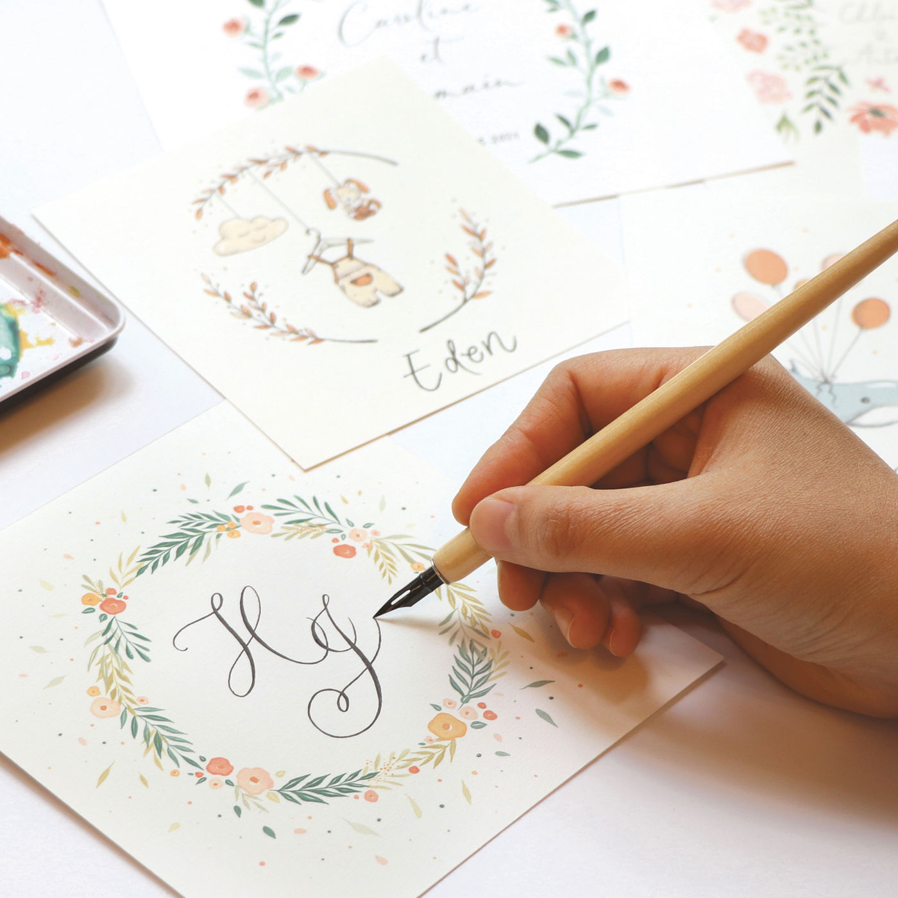

01 — La maison
Nous enrichissons l’expérience client des plus grandes maisons de luxe. Chaque atelier est dessiné, prototypé et joué à la main, devant vos clients.
En point de vente comme en événement, par des artistes formés dans notre atelier du 17e. Plus de dix ans, une soixantaine d’ateliers déployés en France et dans les marchés internationaux.
- ans d’atelier
- 10+
- réalisations
- 58
- maisons accompagnées
- 14
- ateliers signatures
- 9
Maisons accompagnées : Guerlain, Dior, Givenchy, Chanel, Yves Saint Laurent, Cartier, Ruinart, Christian Louboutin, Lalique, Chaumet, La Mer, Estée Lauder, Chloé, Martell.
02 — Les gestes
Huit façons de laisser une trace sur un objet.
Tracés par un artiste, à la main, sur la matière que vous nous confiez. Seuls ou combinés, en atelier comme devant vos clients.
-
I
La gravure
Tracée à la pointe, d’une initiale à une illustration complète. Les gravures peuvent être colorées ou dorées à la feuille.
Verre · Céramique · Laque

-
II
La feuille d’or
Un motif reproduit à l’identique, ou posée plus librement pour un décor lumineux qui ne se répète pas. Or ou argent véritable.
Verre · Céramique · Papier · Marbre
-
III
La peinture
La technique la plus libre : la création d’une image, toute la palette, tous les styles.
Verre · Papier · Textile · Cuir · Bois

-
IV
La broderie
Un logo, un dessin vectoriel ou un texte repris fil à fil, ou un motif créé selon votre brief.
Textile

-
V
La calligraphie
Un prénom, une dédicace, tracés à la plume devant l’invité. Nos artistes vous accompagnent du brief jusqu’à la production.
Pièces uniques · Cadeaux d’exception

-
VI
L’embossage et la dorure à chaud
Le marquage en creux, avec ou sans or, en caractères d’imprimerie de 0,5 ou 1 cm, avec ou sans empattements.
Cuir · Papier · Bois

-
VII
L’aérographe
Un logo reproduit à l’identique, ou une illustration créée selon votre brief, avec une grande liberté graphique.
Textile · Cuir · Bois

-
VIII
L’illustration
Pour faire rêver vos invités : une couronne, un portrait, un jardin, dessinés pour chacun, jusqu’à la pièce unique.
Pièces uniques · Cadeaux d’exception

03 — Réalisations
Ce que nous avons déployé.
Une sélection parmi cinquante-huit réalisations : ateliers retail, événements, pièces uniques et éditions limitées.
-

Givenchy
La Collection Particulière
Gravure sur verre · Galeries Lafayette Haussmann
-

Yves Saint Laurent Beauté
Libre Atelier
Feuille d’or · Retail international
-

Guerlain
Xmas 2024, avec l’artiste Shourouk
Strass et calligraphie · Retail international
-

Ruinart
Carte Blanche 2023
Dorure à chaud · Carreau du Temple
-

Maison Martell
Pièce unique
Gravure mise en couleur or
-

Christian Louboutin
Paris 2024
Peinture · Atelier retail
-

Dior
Xmas Parties 2024
Couronnes en fleurs et végétaux séchés
-

Chaumet × Trudon
Chinese New Year 2024
Feuille d’or · Série de bougies
-

Chanel
Photophore
Studio graphique · Illustration
-

Lalique
Soleil Vibrant
Studio graphique
-
58
Voir toutes
les réalisations
04 — La méthode
Du premier trait au comptoir.
Le studio, les artistes et les chefs de projet travaillent au même endroit. Un atelier se dessine, se corrige et se répète avant de voyager.

-
I
Dessiner
Le studio graphique imagine l’atelier avant qu’il existe : le geste, le motif, le support, dans la direction artistique de la maison.
-
II
Prototyper
Les prototypes se font sur place, boulevard Berthier, et se corrigent le jour même.
-
III
Former
Nos artistes sont formés dans notre atelier du 17e. Quand l’atelier voyage, nous formons aussi les équipes qui le jouent.
-
IV
Déployer
Du corner d’une journée au déploiement international, avec des guidelines pour chacun de vos marchés.
05 — Les métiers
Quatre façons de travailler ensemble.
- 01 Les animations retail L’atelier s’installe dans votre point de vente ou votre événement. Nos artistes personnalisent devant le client, du corner d’une journée au déploiement international.
- 02 Les ateliers signatures Des dispositifs déjà éprouvés, immédiatement disponibles, que nous adaptons à votre direction artistique sans repartir d’une page blanche.
- 03 Les coffrets et le packaging De la pièce unique à la série de quelques centaines, personnalisées à la main dans notre atelier parisien.
- 04 Le studio graphique Il imagine les ateliers avant qu’ils existent, et dessine ce qui les accompagne : print, packaging, design produit, illustration.


06 — L’atelier
Un atelier, pas un bureau.
Les artistes, le studio graphique et les chefs de projet travaillent au même endroit, dans le 17e. Les prototypes se font sur place, et se corrigent le jour même.

Direction
Aurélie de Dion, fondatrice et directrice de création.
Célia Lannes, directrice exécutive.
Projets
Agnès Maunoury, Victoire Vidal, Juliette Leroux.
Mégane Vinson pour la formation des équipes.
Retail
Stéphane Lemire, animation retail et développement.
Studio graphique
Yui Matano et Manon Solanet, directrices artistiques.
Ingrid Fleurant et Manon Leemput, graphistes.
07 — Contact
Dites-nous ce que vos clients devraient pouvoir emporter.
L’atelier
35 boulevard Berthier
75017 Paris
+33 1 44 09 81 85
contact@cobaltcreation.com
Du lundi au vendredi, 9h30 à 18h30